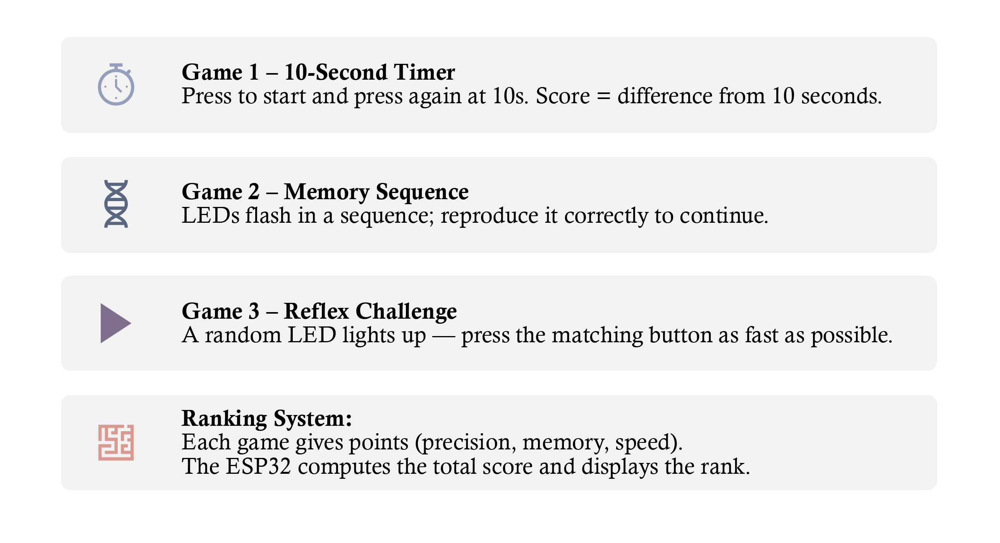

This section presents my contribution to the M.A.B.I.T.E project through the implementation of a
Simon Says memory game on an ESP32-based system.
(Memory Training): Challenges the player’s short-term memory by requiring the reproduction of increasingly complex LED and sound sequences.
(Interactive Feedback): Combines visual cues (LEDs), audio signals (buzzer), and user input (buttons) to reinforce cognitive engagement and learning.
(Progressive Difficulty): Automatically increases complexity as the player succeeds, ensuring a continuous and adaptive cognitive challenge.
